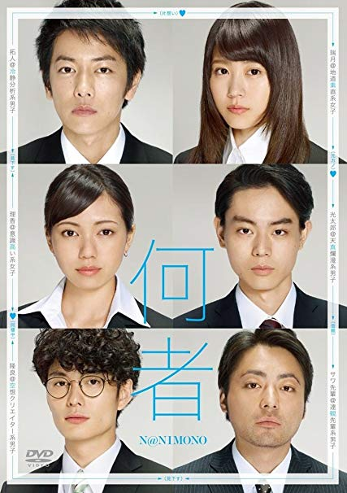

何者
作品情報
2016/日本 98分
監督: 三浦大輔
原作: 朝井リョウ
出演: 佐藤健 有村架純 二階堂ふみ 岡田将生 菅田将暉 山田孝之
あらすじ
就活の情報交換のため集まった5人の22歳。かつて演劇サークルで脚本を書いていて人を分析するのが得意な拓人(佐藤健)。天真爛漫で何も考えていないようで、着実に内定に近づいていく光太郎(菅田将暉)。光太郎の元カノで拓人が思いを寄せ続ける実直な性格の瑞月(有村架純)。人一倍“意識高い系”でありながら、結果が出ず不安を募らせていく理香(二階堂ふみ)。社会の決めたルールには乗らないと宣言しながらも焦りを隠せない隆良(岡田将生)。彼らは、海外ボランティアの経験やサークル活動、手作り名刺、SNS、業界の人脈等、様々なツールを駆使して就職戦線を戦っていく。だが企業に入れば「何者」かになれるのか、自分は「何者」になりたいのか……。そんな疑問を抱えながら就活を進める中、5人はそれぞれの思いや悩みをツイートするが、就活のやり方やスタンスに嫌悪感を覚えることもあり、次第に人間関係が変化していく。そんな折、拓人はサークルOBのサワ先輩(山田孝之)に相談するが、思うようにいかない現実に苛立ちを隠せなくなる。やがて内定者が現れたとき、抑えられていた妬みや本音が露になり、ようやく彼らは自分を見つめ直し始めるのだった。果たして自分は「何者」なのか……。
各部員によるレビュー及び短評
| ぽこすけ | 70点 | |
|---|---|---|
| ねこねこ | 80点 | 邦画に対する偏見を崩してくれた お祈り（否定）をされ続けて壊れていく気持ちは十二分に共感できる |
| あおい | 80点 | 安定の面白さ。もらとりあむタマ子のドロドロver。ねこねこさんの「こいつらの目ぇ見てみろよ、空っぽだろ！」が名言すぎて好き。 二階堂ふみちゃんかわいい |